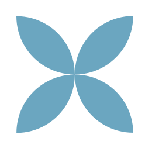

Пока ничего не нашлось
Попробуйте другую формулировку или уберите часть фильтров.
ЗНАНИЯ, КОТОРЫЕ РАБОТАЮТ
Статьи, кейсы, записи мастер-классов и демо-курсы.
Соберите из них подборку для клиента или команды.

Попробуйте другую формулировку или уберите часть фильтров.